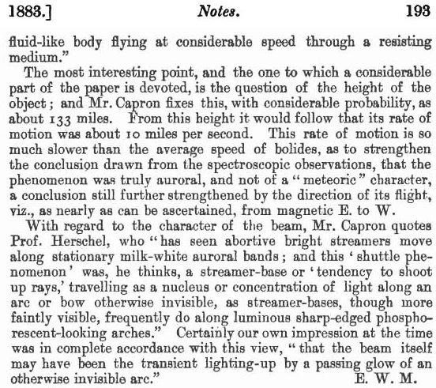
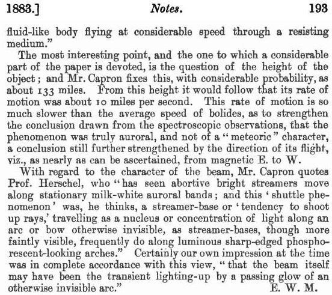
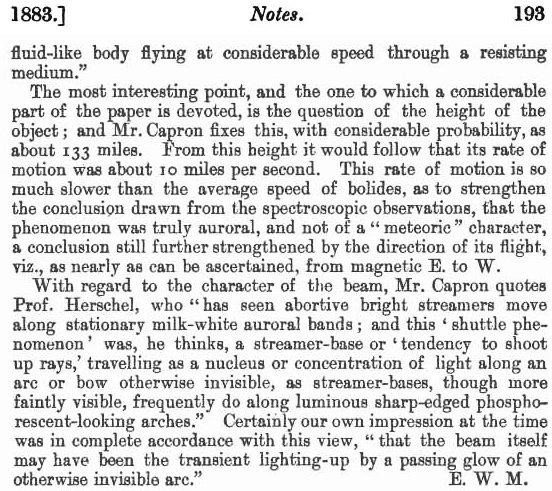
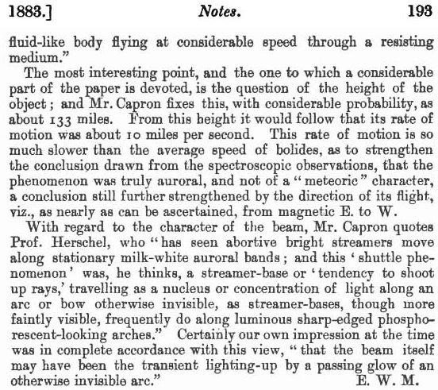

Le mois de fut rendu remarquable par l'apparition du plus grand sun-spot vu dans ces 11 dernières années, et par l'occurence d'une série de tempêtes boréales et magnetiques, en coïncidence précise avec la période à laquelle le spot était visible. Mais le phénomène le plus unique et frappant de cette période eut lieu lors de la grande tempête boréale du vers , lorsqu'un rayon de lumière brillant s'éleva depuis l'horizon est et passa majestueusement à travers le ciel, pour la plupart de la même manière que le ferait tout corps céleste ordinaire, mais avec plusieurs centaines de fois leur rapidité. Si belle et merveilleuse, une apparition méritait que l'attention la plus complète y soit accordée ; et c'est avec ce point de vue que M. Rand Capron en a recueilli autant d'observations qu'il a pu s'en procurer, dont il a discuté dans un intéressant article paraissant dans le Philosophical Magazine de .
M. Capron a compilé quelques 26 observations du phénomène, dont toutes sauf 5 ont été faites en Angleterre. La
plupart d'entre elles sont incomplètes à de nombreux égards dont nous pourrions souhaiter qu'ils aient été remarqués ;
et l'exactitude des observations laisse en fait beaucoup à désirer ; mais le phénomène apparut si soudainement,
disparut si vite, et était à la fois si inhabituel et frappant, pour ne pas dire inspirant l'admiration, qu'il est
plutôt satisfaisant de me trouver aussi répertorié qu'il n'est surprenant que plus d'information n'ait pas été
assurée. Les propres observations spectroscopiques de M. Capron, par exemple, établissent de manière satisfaisante le
véritable caractère boréal de l'objet, contre la théorie vivement défendue par plusieurs observateurs qu'il s'agissait
d'un "météore" ou 'd'un "météoroide" ; et M. Capron
résume les autres aspects particuliers comme suit : — Heure de l'apparition, un peu après . Durée
du vol, environ 75 s. Longueur et largeur apparentes approximatives, 27° x 3⅓. Direction du vol, Est à Ouest
magnétique
.
La forme du rayon est décrite en un langage très varié ; en forme de "cigare" ou de "broche" représente assez
précisément l'opinion de la plupart. "Blanc perle" ou "blanc verdâtre" sont parmi les descriptions de la couleur de sa
lumière, qui semble avoir correspondu de près à la teinte "citron" de la ligne boréale W.L. 5569; et quant à sa qualité, la comparaison avec une lueur éléctrique in
vacuo
donne en l'idée aussi précise qu'une autre. Pour la plupart des observateurs anglais cela semblait
plutôt bien défini dans sa silhouette ; mais certains remarquèrent une apparence plumeuse ou fragmentée vers ses
bords. Le professeur Oudemans a noté une marque sombre remarquable, de 10° de long, vers le centre (et son observation
est confirmée par des observateurs à Bruxelles et Chatham), comme si le rayon avait vraiment eu la forme d'un anneau
retiré
, ce que l'on pourrait attendre d'un corps élastique gazeux ou semblable à un fluide volant à vitesse
considérable à travers un medium résistant.
Le point le plus intéressant, et celui auquel une partie considérable de l'article est consacrée, est la question de la hauteur de l'objet ; et M. Capron fixe ceci, avec une probabilité considérable, comme étant d'environ 133 miles. D'après cette hauteur il s'en serait ensuivi que sa vitesse était d'environ 10 miles/s. Cette vitesse est tant inférieure à la vitesse moyenne des bolides, qu'elle tend à renforcer la conclusion tirée des observations spectroscopiques, selon laquelle le phénomène était vraiment boréal, et pas de caractère "météorique", une conclusion renforcée plus encore par la direction de son vol, viz., d'aussi près que l'on puisse s'en assurer, de l'est à l'ouest magnétique.
Concernant le caractère du rayon, M. Capron cite le professeur Herschel, qui a vu des abortive bright streamers se déplacer le long de bandes
boréales blanc laiteux stationnaires ; et ce "phénomène de navette" était,
Certainement notre propre impression à ce moment était en complet
accord avec ce point de vue selon lequel pense-t-il,
a streamer-base, ou
"tendance à shoot up rays", voyageant comme un noyau ou concentration de lumière le long d'un arc ou bow autrement
invisible, as steamer-bases, bien que plus faiblement visible, le fait fréquemment le long d'arches lumineuses bien
dessinées et à l'apparence phosphorescente.le rayon lui-même ait pu être l'allumage transitoire par la lueur passante
d'un arc autrement invisible
.